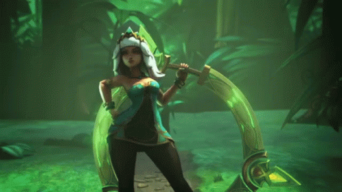
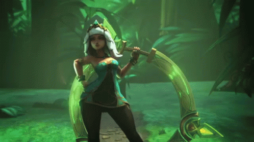
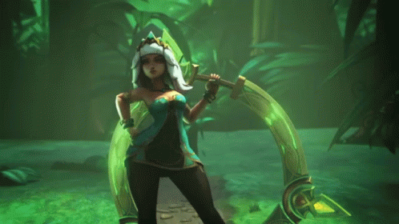

| Lunes | Martes | Miercoles | Jueves | Viernes | Sábado | Domingo | |
|---|---|---|---|---|---|---|---|
| Horas | Desde las 10am hasta las 2pm | Desde las 10am hasta las 2pm | Desde las 10am hasta las 2pm | Día libre | Desde las 2pm hasta las 6pm | Desde las 2pm hasta las 6pm | Desde las 2pm hasta las 6pm |
League of Legends, a menudo abreviado como LoL, es un popular juego de batallas multijugador en línea (MOBA) desarrollado por Riot Games. Ambientado en un mundo de fantasía en el que los jugadores asumen el papel de "ganadores", cada uno con habilidades únicas, luchan en equipo para destruir los lazos del equipo contrario y sus armas. El circuito de torneos de League of Legends es un evento de esports conocido en todo el mundo. es un evento de esports conocido en todo el mundo. Este deporte profesional presenta competiciones regionales en todo el mundo, que culminan en los Campeonatos del Mundo anuales. Estos torneos incluyen la League of Legends Championship Series (LCS) en Norteamérica, League of Legends European Championship (LEC), League of Legends Champions Korea (LCK), y la League of Legends Pro League (LPL) en China y muchos otros en diversos lugares. Por lo general, la temporada competitiva consta de divisiones de primavera y verano, en las que los equipos compiten en un formato de todos contra todos para clasificarse en la fase final. para clasificarse para las eliminatorias. Los ganadores de cada eliminatoria regional obtienen una plaza en el Torneo Mundial, donde compiten por el prestigioso título de la Copa Mundial de la FIFA. Mundial, donde compiten por el prestigioso título de Campeón del Mundo. Los deportes electrónicos de League of Legends millones de aficionados que siguen en directo las partidas y los torneos. Los eventos se celebran en grandes estadios, y a menudo se agotan las entradas en los últimos estadios del mundo. Los equipos están formados por jugadores apoyados por personal docente, analistas y directivos, todos con el objetivo de alcanzar el éxito a través del juego táctico, el trabajo en equipo y las habilidades individuales.
